Use Case
Usually an organization has different stages/environments/group like Development, Quality Assurance (QA), Pre-Production and Production in the application life cycle. And there are multiple users in each of these Groups. For ex., in the Development Group there might be 10 Developers, 5 Testers in QA and so on.
When a resource like an EC2 Instance or any other AWS resource is created for the Production Group then only the members in the Production Group need to have the access to that particular EC2 Instance and no one else. The same is the case with the other Groups also, the respective members should have access to only the Instances they are authorized to.
The same can be achieved via IAM. The 600 odd policies which come with IAM doesn’t meet this requirement, so in this use case we would be creating a custom policy to meet the above requirement, assign it to an IAM User, create a set of EC2 Instances. And we will also ensure that the above policy works via the EC2 and the CloudTrail Console. All of these is achieved by tagging the EC2 Instances appropriately.
AWS Services: EC2, IAM and CloudTrial
-- Create 2 EC2 instances. The OS the EC2 instances doesn’t matter. But try to create t2.micro as they fall under the free tier.
-- Select one of the EC2 instance. Go to the Tags tab and add a Tag with the Env as the Key and Production as the Value. This is to designate that this EC2 instance belongs to the Production instance.
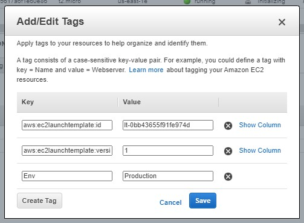
-- Do the same with the other instance, but Tag it as a Development for the Value.
-- Click on the Gear button on the top right of the EC2 screen to “Show/Hide Columns” and select Env as the column to be displayed.
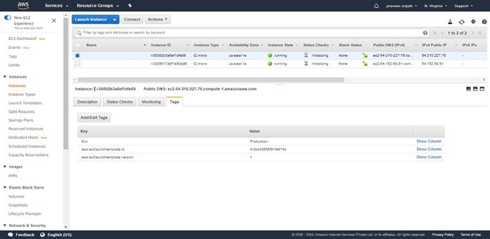
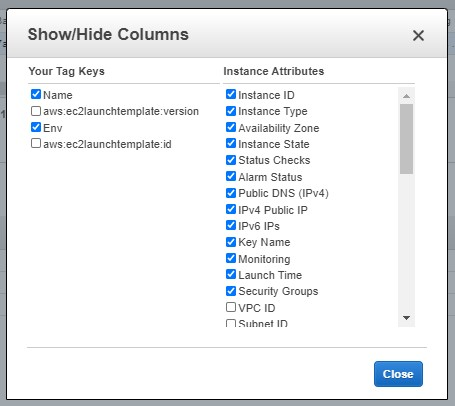
-- Now the EC2 instances can be easily identified as the Production and Development instances as shown below.
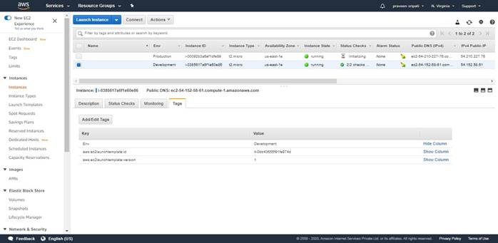
-- Go to the IAM Management Console, click on Policies and again click on “Create policies”.
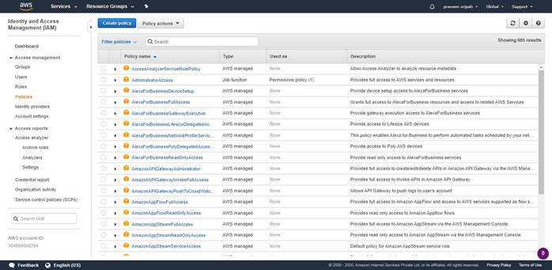
-- Click on the JSON Tab and paste the below JSON and click on Review Policy. This policy gives the user permissions to Start/Stop the EC2 instances with the Tag Env equals Production. And also, the user has permission to describe the EC2 details for any of the EC2 instance.
{
"Version": "2012-10-17",
"Statement": [
{
"Effect": "Allow",
"Action": [
"ec2:StartInstances",
"ec2:StopInstances"
],
"Resource": "arn:aws:ec2:*:*:instance/*",
"Condition": {
"StringEquals": {
"ec2:ResourceTag/Env": "Production"
}
}
},
{
"Effect": "Allow",
"Action": "ec2:DescribeInstances",
"Resource": "*"
}
]
}
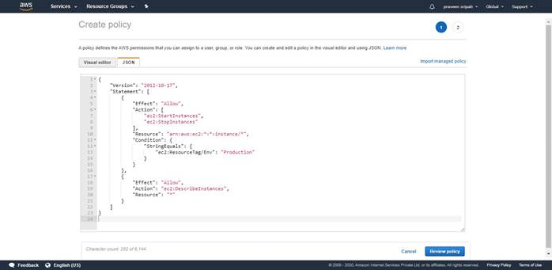
-- Give the policy a name and click on “Create policy”.
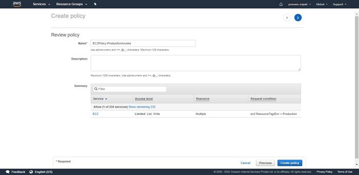
-- The policy should be created as shown below.
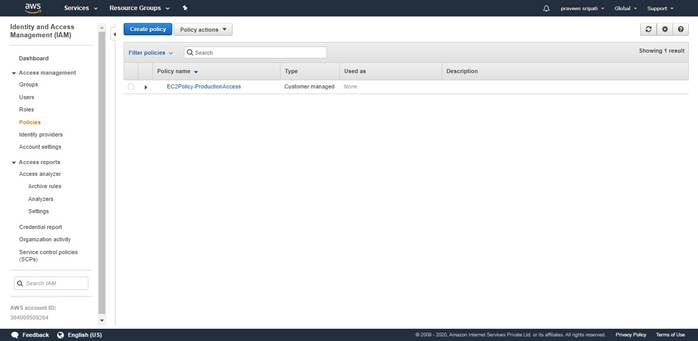
-- Click on the Users link and click on “Add Users”.

-- Give the user a name and select the options as shown in the below screen.
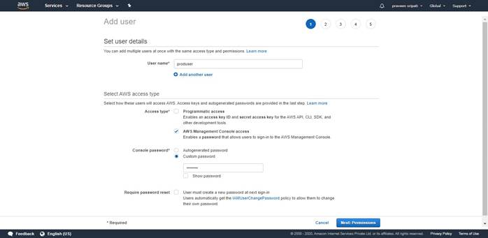
-- Select “Attach existing policies directly” and select the policy which was created earlier. This will give the user the permissions mentioned in the policies. Click on “Next Tags”.
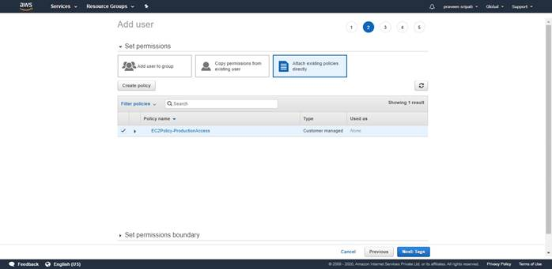
-- Tags are optional and can be avoided. Click on “Next Review”.
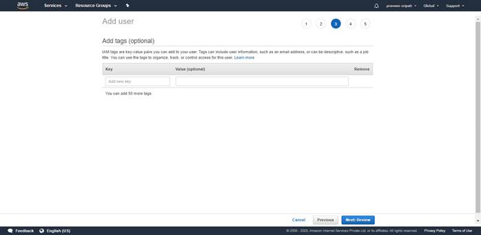
-- Review all the details for the user to be created and click on “Create user”.
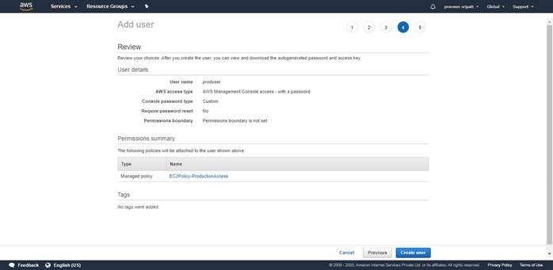
-- The IAM user will be created with the mentioned details. Note down the URL or the link mentioned in this screen. This is link to be used to used to login as an IAM user.
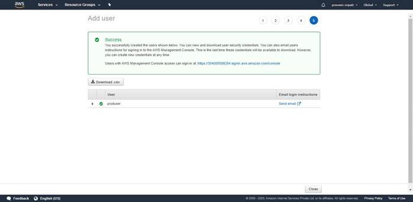
-- Logout as the current user and open the URL. Enter the credentials and click on “Sign in”.
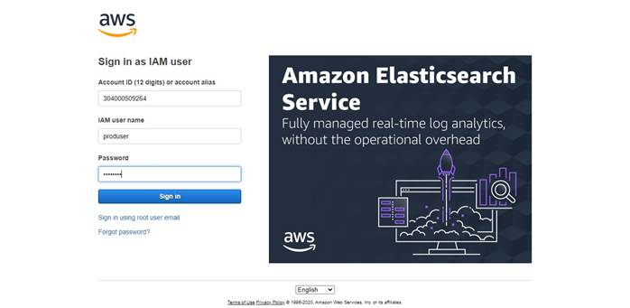
-- Since the user has Describe permissions for all the EC2 instances, the user should be able to see the details of both the EC2 instances.
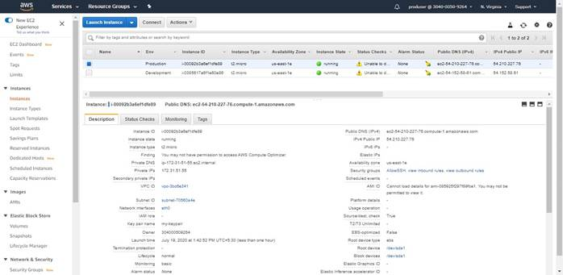
-- The user has read-only access to the Development EC2 instance. Select the Development EC2 instance and try to stop it. The “not authorized” message would be shown and displayed below.
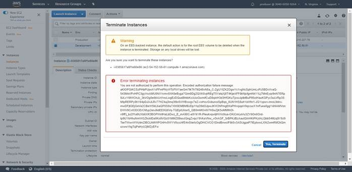
-- For the Production instances the user has access to Start/Stop. Try to Terminate the Production instance. The “not authorized” message would be shown and displayed below.
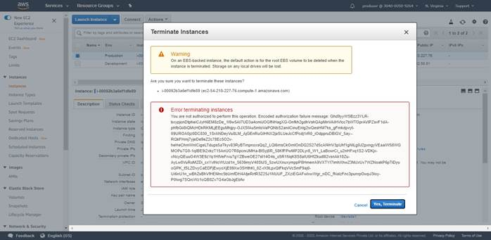
-- Try to stop the Production instances and it would be successful as the user has permissions to Stop the EC2 instances with the tag Env as Key and Production as Value.
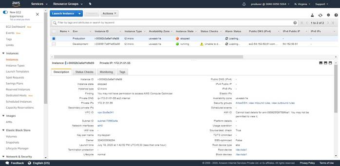
-- Go to the CloudTrail and then to the “Event history” option. The CloudTrail feature is by default on and we should be able to see all the actions performed by the root use and as well as the IAM user. Note that it will usually take about 15-20 minutes for the action to be propagated to the IAM CloudTrail Service.
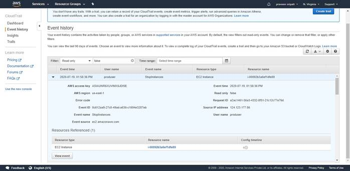
Clean up
- Terminate the EC2 instances
- Delete the IAM User
- Delete the IAM Policy.